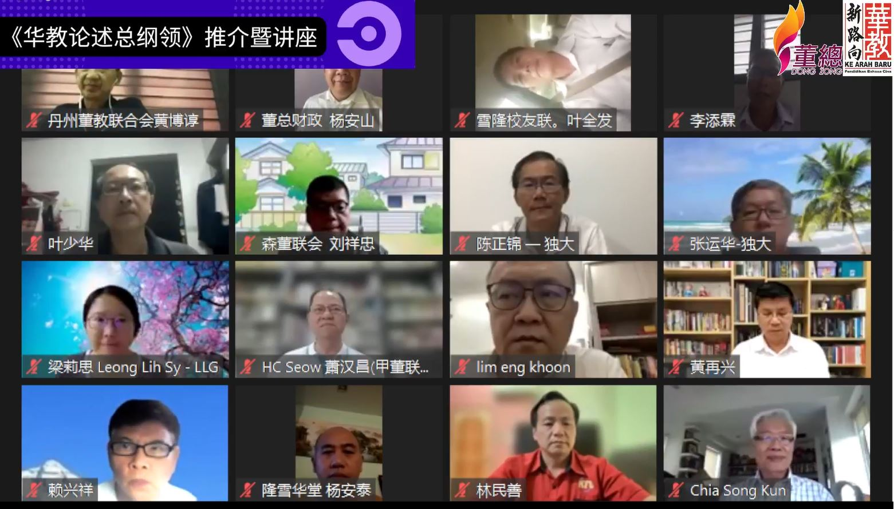

《华教论述总纲领》推介暨讲座
华教永续发展关键：持续追求变革和改善

“直面时代精神：华教运动的论述与实践”《华教论述总纲领》推介暨讲座于2022年3月5日在线上平台举行，由董总主席陈大锦、教总主席谢立意、独立大学有限公司副主席陈友信（目前为主席）推介《华教论述总纲领：构建多元与永续发展》。
华教论述的继承、省思与创新
陈大锦在致词时表示，华教运动先后推出《独中建议书》（1973）、《独中教改纲领》（2005）和《独中教育蓝图》（2018），如今随着《华教论述总纲领》出炉后，将让各界对华教运动有更清晰的认识，以及更深入的回顾与前瞻。
陈大锦说，华教运动也必须理解当代的思潮趋势，拓展视野，为母语教育与社会发展提供更为理性与清醒的导向。他说，马来西亚的华教运动不只是推动教育专业的政策倡议，更是积极争取权利平等的社会运动。
“华教论述的继承、省思与创新，就是在这个原则上推动。持续追求变革、持续寻求改善，才是华教永续发展的重要关键。”
谢立意指出，华教面对最大的阻力是当权者，无论是殖民政府或国家独立后的民选政府，都受限于政府所制定的教育法令和政策。
“数十年来，一再出现种族主义者叫嚣要求关闭华校，很多不利华教发展条文。不过，华社及华教工作者总是能沉着应付，力争华教应有权益。”
他认为，面对全球教育改革的冲击以及新生代思维价值观不同，也对华教发展带来更严峻的挑战。
陈友信表示，这份总纲领从研拟到推介耗时逾2年，筹委会先是广邀37名关心华教的社会工作者撰写文章，再特邀14名华教工作者撰写专文。
“他们分別以‘华教社会运动’及‘华教教育专业’为题，最后再由潘永强以上述文章为基础，执笔写出《华教论述总纲领》，希望为华教发展路向提供参考文件。”
与此同时，配合上述推介礼而举办的讲座，邀请了文史工作者陈亚才、博特拉大学外文系中文学程副教授庄华兴博士和新纪元大学学院中文系教授安焕然博士担任主讲人。
陈亚才：面向友族培养华教传教士
陈亚才认为，我国华教来到了一个崭新的时代，应掌握优势来进一步拓展，善用所具备的资源和人才，自信地走出“华教圈”，从事更多分享和交流。
“华教在过去很长一段时间，我们常说是在夹缝中求生存，今天我们来到的一个时代，是华教在夹缝中拓展，意思就是华教所面对的挑战和危机没有减少，但是华教进一步发展的空间还是有的。”
他谈到，在关于推广华教方面，我们常处于被动一方，即出现争议时才做出回应，因此，需要成立面向友族的队伍，培养华教“传教士”，长期从事传达讯息、沟通协调、经验交流等工作。
对于有者担心友族学生在华小增多，陈亚才认为与其担忧，不如多筹办工作营，深入研讨和疏理共识与核心价值，并加以实践。他认为可通过整理核心思想，设定具体行动方案和目标，规划组织架构与人员编制及全国性的宣导，以落实华教论述总纲领。
安焕然：重视人文与品格教育
安焕然指出，当前华教运动有“运作”却没有“动作”，问题在于华社对华教共识的涣散，对跨文化论述缺乏兴趣，也担忧非华裔生增加或带来的变质。
他说，华教的论述与实践，应有本土主体性的建构与认知，要重视人文与品格教育，不只是讲华语学华文而已。他也说，我国华教不能照搬中国的那套官方意识形态，对外和对内的跨文化意识也需加强。
“华教也不仅仅是把说华语当成是一个图腾来崇拜和在乎，这是很形式的象征和意义，而是需要有沉淀和类化，把中华文化的精髓弘扬出去。”
安焕然认为，我国的华文教育不应该是培育狭隘种族主义的温床，而应该是要弘扬对向上向善的文化教育和人文精神。
他举例，当小学课本出现爪夷文时，一些华人发表非常功利的言论，说学爪夷文没有用，连带说学马来文也没有用，这其实充满偏见，让友族非常不舒服。
庄华兴：设立非党派马来文媒体
庄华兴主讲“华教在当下面对的四个问题”时强调，华人文化精神与中国民族主义有本质上的差异，华教应该遵循自己的发展道路，而不应该与抗战时期的民族主义精神揉合。
他指出，为配合21世纪环球化趋势，华社的心理建设不可忽略国际性因素。他建议开展与马来社会的互动，通过考虑设立非党派马来文媒体，集合跨族群的编辑人才出版跨族群喉舌，以马来语有系统地向广大马来语社会宣扬理念，对抗社会上被扭曲的价值观，打破现有对马来人与华语的刻板印象。
“我们过去与马来人的交流都是通过代表制，造成马来社会对华社组织的刻板印象，交流流于形式所需。鉴于此，华教领导人有需要参加语言课程，提升马来语，做到有效传达理念的目的。即便是不成功，友族对华教领导人刻板印象将逐步改观，孟加拉外劳学习马来语有一种锲而不舍的精神，这是值得借鉴之处。”
他认为，上世纪90年代以后，马来西亚社会逐渐转型，社会上出现新兴中产阶层，更加重视孩子接受素质教育，同时国民教育的排他性与宗教色彩越来越浓厚，一些家长把孩子送往华校，促成华校的结构性改变。
“华教原来作为捍卫华文教育与文化堡垒的任务，不得不面对来自家长的更多元、分散，甚至是矛盾对立的诉求。”
这场线上讲座一共获得近90人参与，出席者包括华团代表、董事会成员、独中教职员和公众人士等。